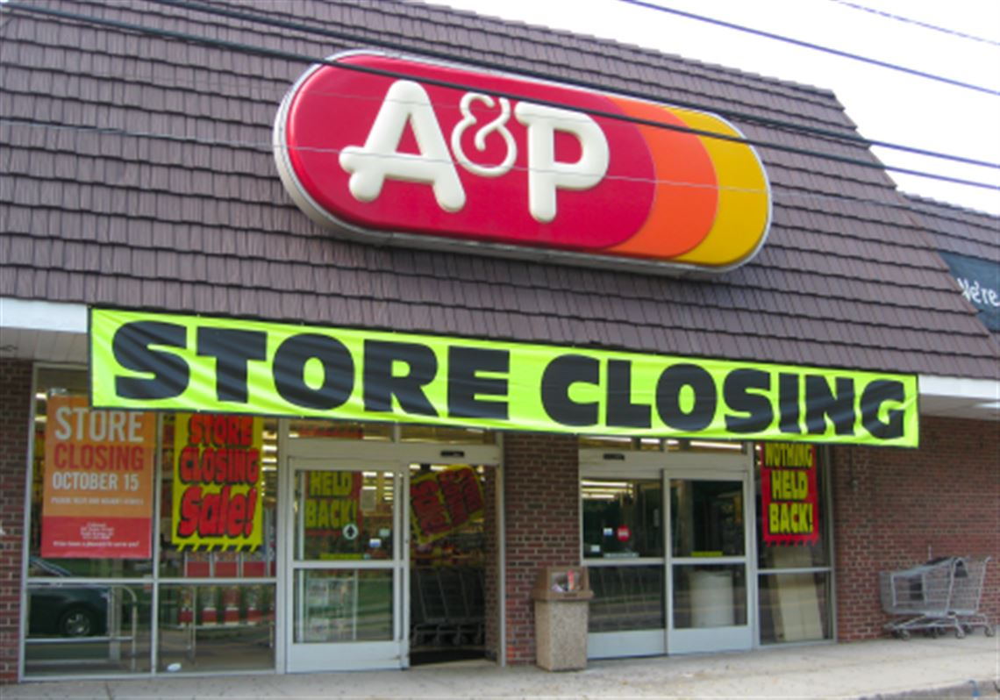

Live in YOUR Good!
This is Tiffany in White Dress

Many years ago I was lucky to meet this wonderful girl off A.O.L. (America Online) and we fast became great friends. I was in NJ and she was out of state. It was a long distance relationship that grew into mutual respectful times. I even got along very well with her mom then. To make a long story short unforeseen circumstances happened and we lost contact over time. Unfortunately, in this situation, time still moved on without each other. 😢 Hopefully today, she is happy and life is great for her and her family. Now it's 2026 and I still wonder how she's doing? Curiosity always gets me here. Her name is Tiffany.
After all these years, it would be awesome to know how's she's doing today? That's it, maybe someone will see this that knows her and will pass it along to Tiffany or to her family or friends. My name is Billy (below) and it's nice to meet you. Think of this website as only a friendly message in a bottle floating down the river of life. 😀 Thank you and God Bless!

Two Fun Facts
❶ From one of many phone conversations, I thought her name was Mia as I kept calling her Mia then... so she kindly said, "Who is Mia? 😍 My name is Tiffany." (Oh no!!!! I thought and said to her, "Don't call me Billy, call me Ned.") It's a good thing she liked me. haha 😁 ...So my name became Ned in my defense, lol. From that moment, we playfully called each other those names from time to time!
 ❷ Her mom Lisa would back up this claim as it being her number one goto drink is Green Tea! Even her pets Boots and Bucket would agree too! Lisa and Paul were such great people!
❷ Her mom Lisa would back up this claim as it being her number one goto drink is Green Tea! Even her pets Boots and Bucket would agree too! Lisa and Paul were such great people!
My Name is Billy
I worked many years as a graphic designer with A&P Supermarkets in their corporate offices in Northern NJ and loved it. Unfortunately, A&P went out of business in late 2015 and I bounced around as a designer after that for the next five years, living in Maryland and Pennsylvania and back to New Jersey doing print ads for supermarket advertising. While the Covid Pandemic was going on and even to date, I learned as much as I could using online courses from Udemy.com about website design. I love it and do it as a steady side hustle when I get the chance. I work retail mostly today to pay the bills until I secure a full time graphic design gig again ASAP. I am a care-giver for my 86 year old mom also which keeps me grounded in this area.

A Final Thought
I get it. I know this might seem odd and I respect everyones privacy today. I really mean well here with this website I created as I am looking for Tiffany today to just say hello. She was a very bright light in time for me during those many months of mutual enjoyable communication, knowing her and for today, all I was hoping for is that she is ok and doing great! It had so much positive potential as I think about it in 2026 and I knew her mom Lisa well too. I wasn't really a stranger, but we never met (I regret that now) due to long distance, money reasons for travel and other unforeseen circumstances. I was just a very good friend as who knows what the future would bring if luck was kinder? Think of this like a Message in a Bottle, floating down the River called Life and maybe it will land in a happy place to find her or at her family and friends to tell her this message inside the bottle...and that is Billy is OK, and I hope you are too.
Tiffany, if you can or want, contact me here on Linkedin as I respect your privacy a ton, but this was a real respectable relationship between us so I figured to give it a try to reach out. If not, I understand and wish you well. ❤️